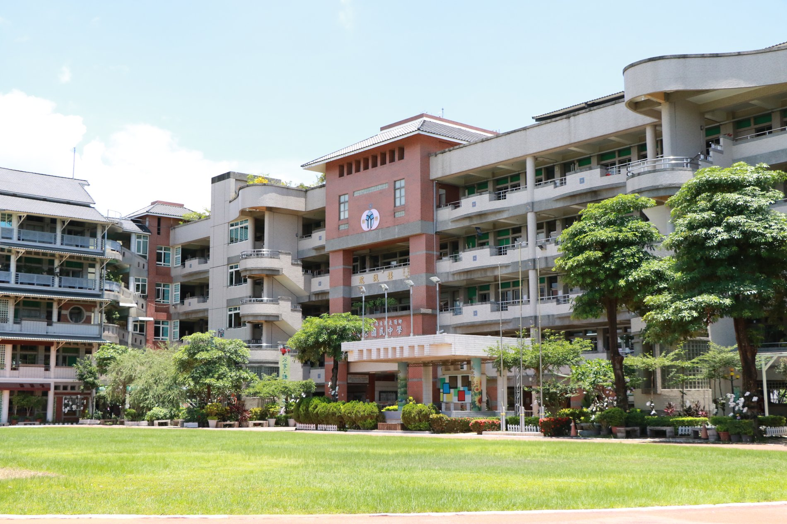
Where Character Grows人が育つ場所인성이 자라는 곳
From its very first year, Nan Jung made daily life and good character its core curriculum — believing that how a student lives matters as much as what they learn.
創立初年から、南榮は「生活」と「品格」を中核の学びとしてきました。何を学ぶかと同じくらい、どう生きるかを大切にする——そんな信念です。
난룽중학교는 개교 첫해부터 일상생활과 인성 교육을 핵심 교과로 삼아왔습니다. 무엇을 배우는가 못지않게 어떻게 살아가는가가 중요하다는 믿음 때문입니다.
Character & Life Education生活と品格の教育인성과 생활 교육
From its very first days, Nan Jung has taught character not from a textbook, but through small, daily acts repeated for decades.創立の頃から、南榮は品格を教科書ではなく、何十年も続く日々の小さな営みの中で育ててきました。개교 초기부터 난룽중학교는 인성을 교과서가 아니라 수십 년간 이어져 온 작고 소박한 일상의 실천을 통해 가르쳐 왔습니다.
For nearly thirty years, every school day begins with quiet reading — and teachers take turns reading right alongside the students.30年近く、毎朝を静かな読書で始めます。先生方が交代で、生徒のそばで一緒に本を読みます。거의 30년 동안 매일 아침 조용한 독서로 하루를 시작합니다. 선생님들도 돌아가며 학생들 곁에서 함께 책을 읽습니다.
On Mother's Day, students kneel to wash their parents' feet — a quiet, powerful act of gratitude.母の日には、生徒が親の足を洗います。静かで、深い感謝のかたちです。어버이날에는 학생들이 무릎을 꿇고 부모님의 발을 씻겨드립니다. 조용하지만 깊은 감사의 표현입니다.
On Teacher's Day, students serve tea to their teachers, learning to honor those who guide them.教師の日には、生徒が先生にお茶をささげ、導いてくれる人を敬う心を学びます。스승의 날에는 학생들이 선생님께 차를 올리며, 자신을 이끌어주는 분들을 공경하는 마음을 배웁니다.
Students keep their own campus clean — toilets included — learning that no honest work is beneath them.生徒は自分たちの校舎を、トイレも含めて自ら清めます。どんな仕事も尊いと学ぶために。학생들은 화장실을 포함해 캠퍼스를 스스로 깨끗하게 관리하며, 정직한 노동에는 귀천이 없다는 것을 배웁니다.
Long group walks build endurance, patience and the simple joy of finishing what you start.みんなで歩く長い道のりが、忍耐力と、やり遂げる喜びを育てます。다 함께 걷는 긴 여정은 인내심과 끈기, 그리고 시작한 일을 끝마치는 소박한 기쁨을 길러줍니다.
Students clean their neighborhood and care for its elders — citizenship learned by doing.地域を清掃し、お年寄りを気づかう。市民としての心を、行いの中で学びます。학생들은 이웃을 청소하고 어르신들을 돌보며, 실천을 통해 시민 의식을 배웁니다.

A Campus to Explore学びの環境탐험하고 싶은 캠퍼스
Set among rice fields beneath Dawu Mountain, the campus gives its students space and beauty in equal measure — from the English Village and the Maker Center to a library, performance auditorium and gardens tended with care. Twenty-three student clubs fill the week with music, sport, language and craft.
Inside the Maker Center & Digital Studio大武山のふもと、田園のなかに広がるキャンパスは、生徒にゆとりと美しさをともに与えます。英語村、創客（メーカー）センターから、図書館、演藝廳、丁寧に手入れされた庭園まで。23の生徒社団が、音楽・スポーツ・語学・工芸で一週間を彩ります。
創客センターとデジタル・スタジオへ다우산 자락 아래 논밭에 자리한 캠퍼스는 학생들에게 넉넉한 공간과 아름다움을 함께 선사합니다. 영어마을과 메이커 센터에서부터 도서관, 공연장, 정성껏 가꾼 정원에 이르기까지 다양합니다. 23개의 학생 동아리가 음악, 스포츠, 언어, 공예로 한 주를 채웁니다.
메이커 센터와 디지털 스튜디오 둘러보기Student Voices生徒の声학생들의 목소리
English is not just studied at Nan Jung — it is spoken, performed and lived.南榮では、英語は学ぶだけのものではありません。話し、演じ、生きるものです。난룽중학교에서 영어는 단순히 공부하는 과목이 아니라 말하고, 표현하고, 살아가는 언어입니다.
English speech by student Li Tzu-hsien.生徒・李芓嫻による英語スピーチ。학생 리쯔셴(李芓嫻)의 영어 스피치입니다.
Student Hsiao Yu-e delivers a BBC-style broadcast.生徒・蕭羽峨によるBBC風のニュース。학생 샤오위에(蕭羽峨)가 BBC 스타일의 뉴스를 진행합니다.
A portrait of dancer Huang Kai-hsin.ダンサー・黄凱欣のドキュメント。무용수 황카이신(黃凱欣)의 이야기입니다.
A "chicken soup for the soul" talk by Richard Hoffmann.Richard Hoffmann 先生による心の栄養トーク。Richard Hoffmann 선생님이 전하는 마음의 양식이 되는 강연입니다.
A Year in the Life学校生活のひととき캠퍼스 생활의 순간들
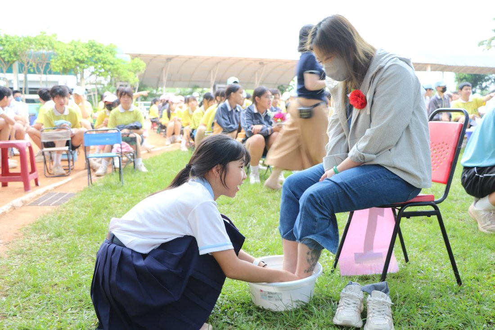
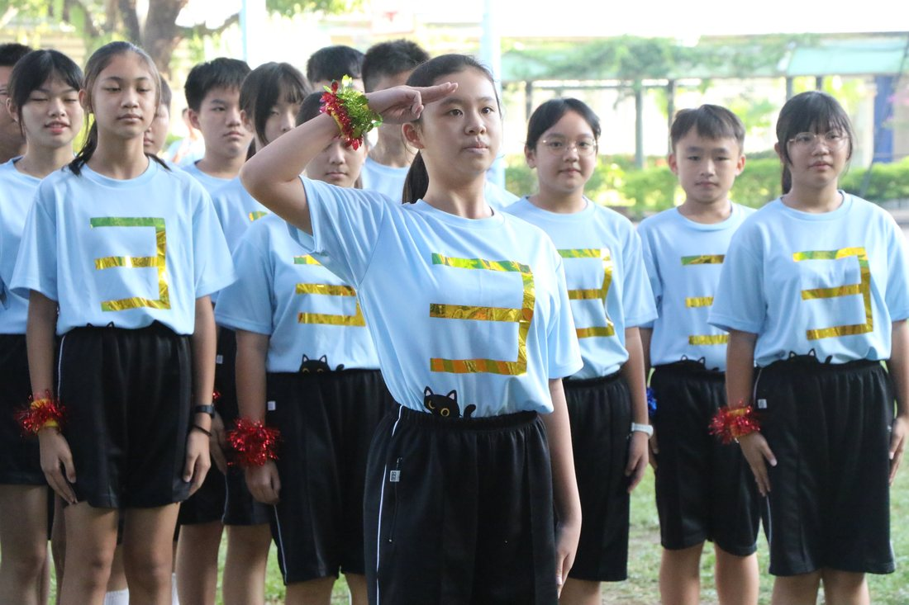
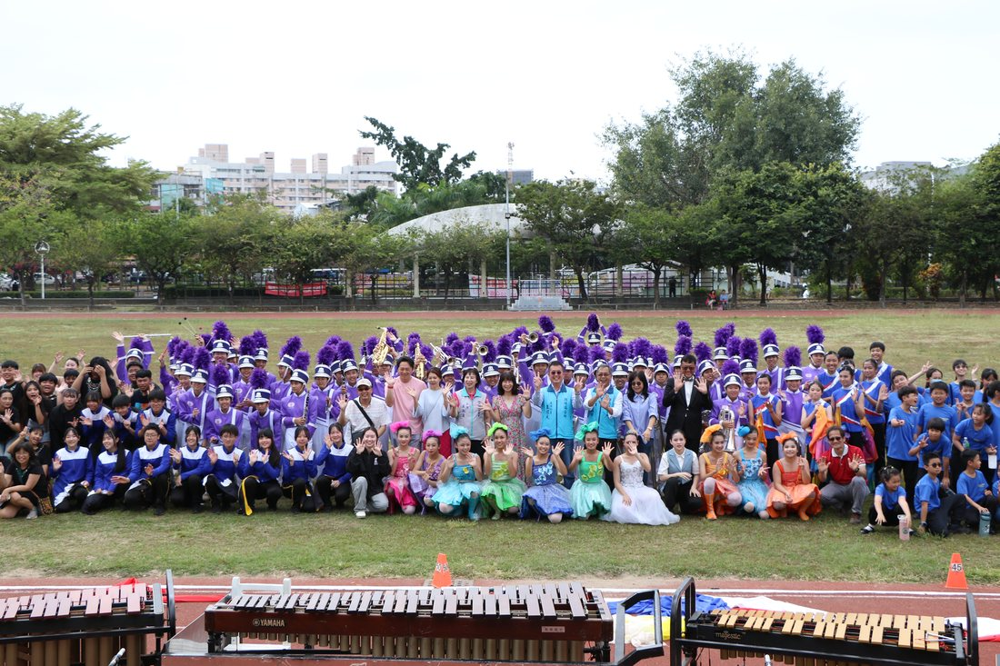
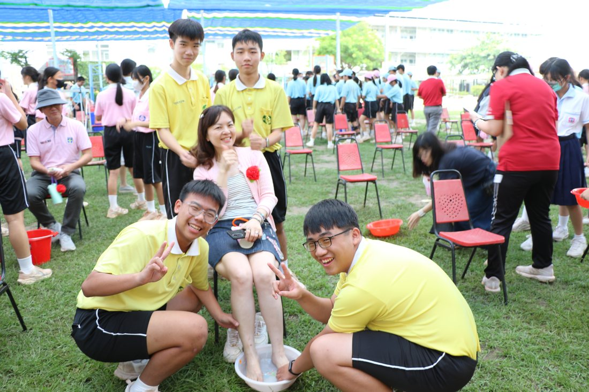
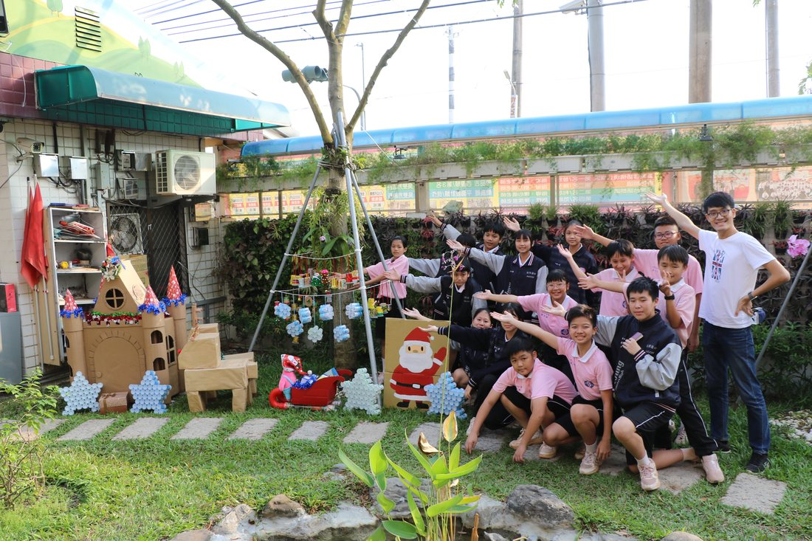
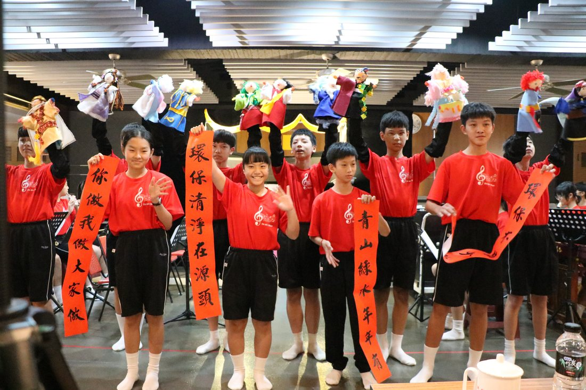
Around Campusキャンパス点描캠퍼스 곳곳

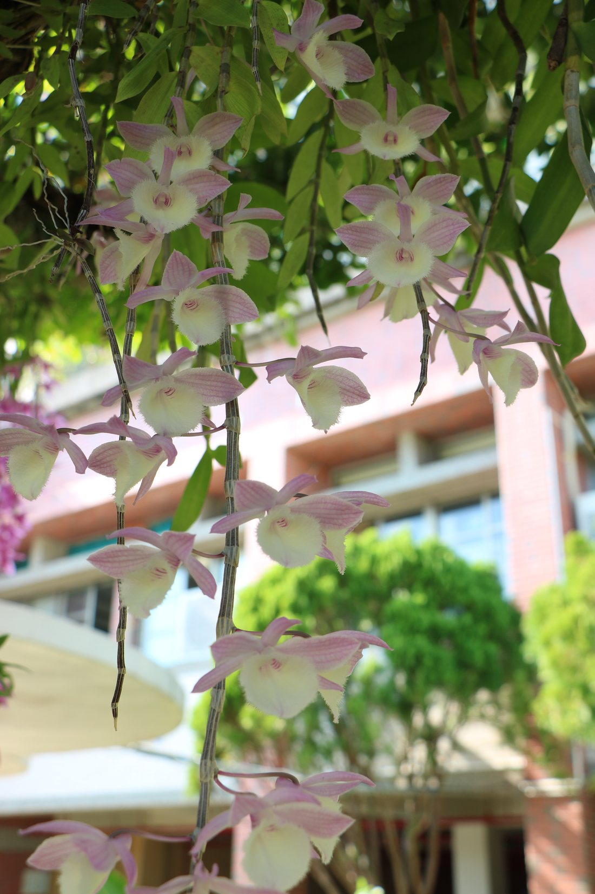
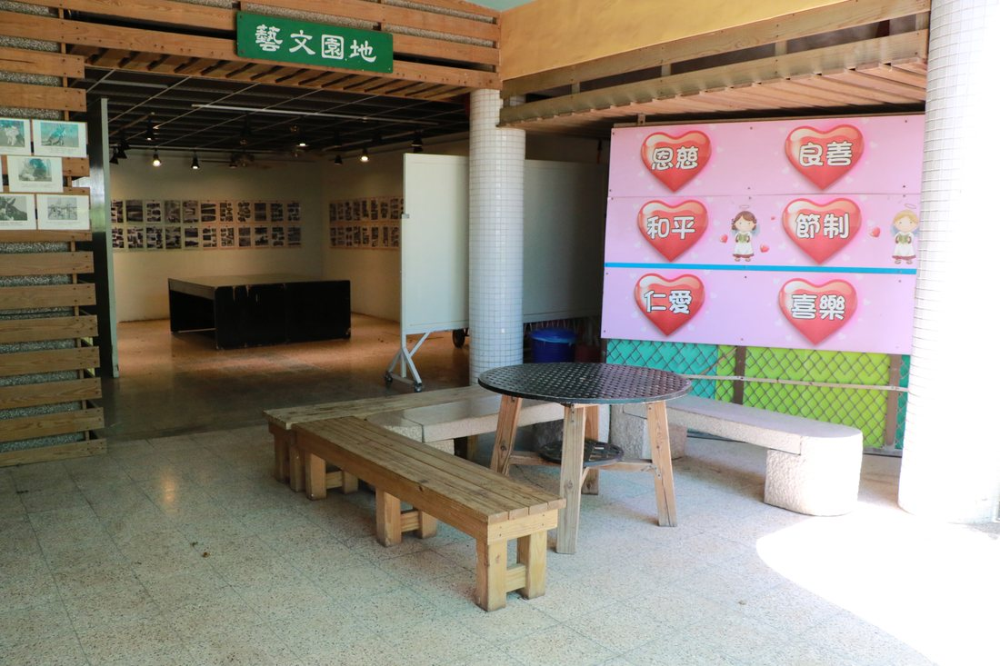
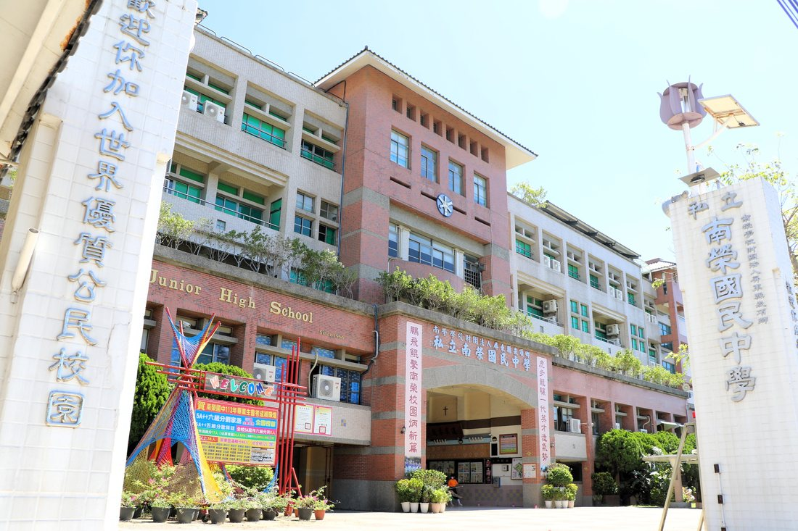

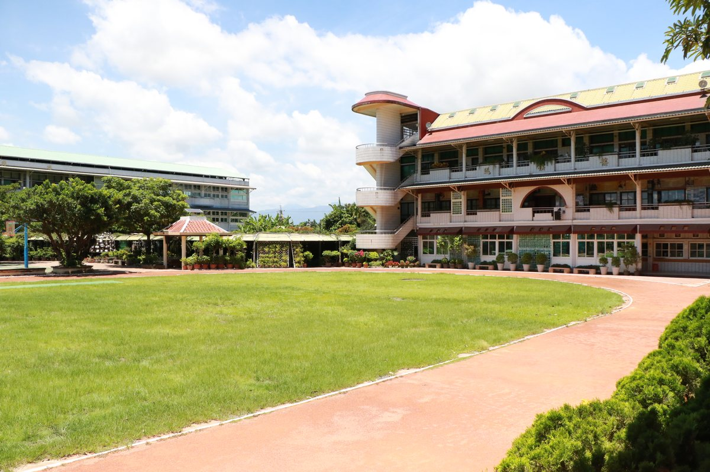
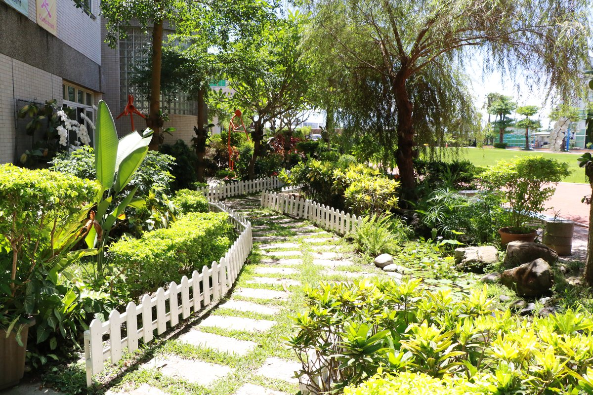
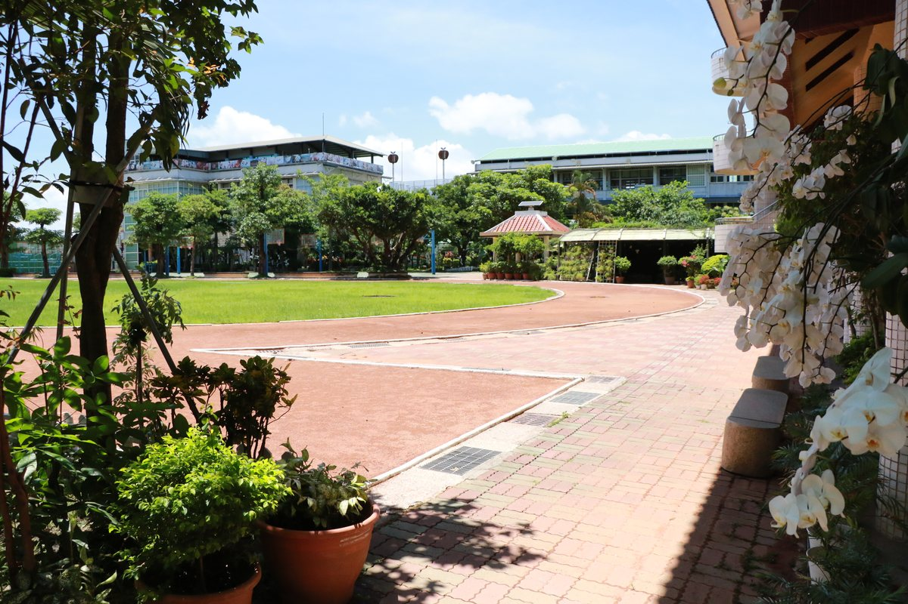
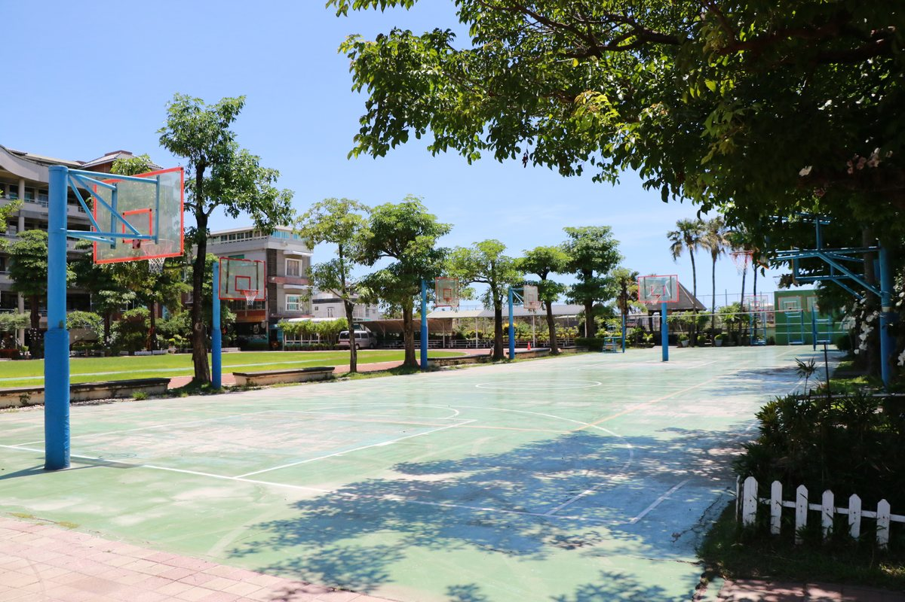
In Depth特集특집
Character & Life Education生活と品格の教育인성과 생활 교육

The Founder創立者창립자

Our Mission使命우리의 사명